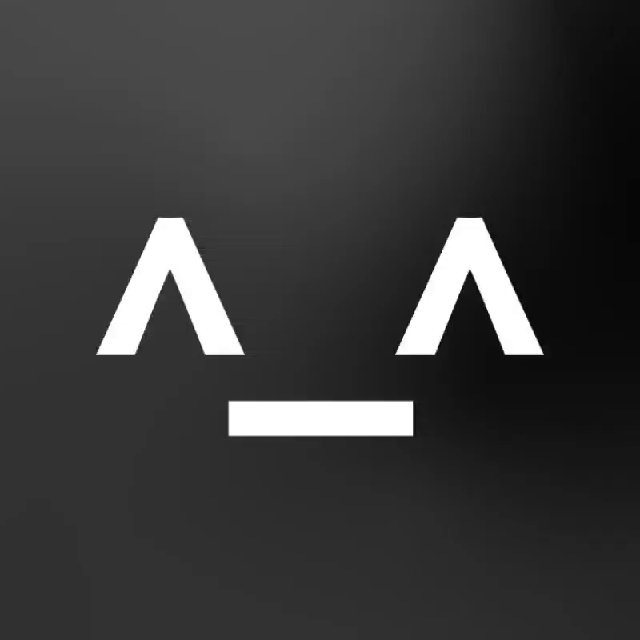

Данный пользователь разыскивается на территории следующих стран: Афганистан, Албания, Алжир, Андорра, Ангола, Антигуа и Барбуда, Аргентина, Армения, Австралия, Австрия, Азербайджан, Багамы, Бахрейн, Бангладеш, Барбадос, Беларусь, Бельгия, Белиз, Бенин, Бутан, Боливия, Босния и Герцеговина, Ботсвана, Бразилия, Бруней, Болгария, Буркина-Фасо, Бурунди, Кабо-Верде, Камбоджа, Камерун, Канада, Центральноафриканская Республика, Чад, Чили, Китай, Колумбия, Коморы, Конго, Коста-Рика, Хорватия, Куба, Кипр, Чехия, Дания, Джибути, Доминика, Доминиканская Республика, Восточный Тимор, Эквадор, Египет, Сальвадор, Экваториальная Гвинея, Эритрея, Эстония, Эсватини, Эфиопия, Фиджи, Финляндия, Франция, Габон, Гамбия, Грузия, Германия, Гана, Греция, Гренада, Гватемала, Гвинея, Гвинея-Бисау, Гайана, Гаити, Гондурас, Венгрия, Исландия, Индия, Индонезия, Иран, Ирак, Ирландия, Израиль, Италия, Ямайка, Япония, Иордания, Казахстан, Кения, Кирибати, Кувейт, Кыргызстан, Лаос, Латвия, Ливан, Лесото, Либерия, Ливия, Лихтенштейн, Литва, Люксембург, Мадагаскар, Малави, Малайзия, Мальдивы, Мали, Мальта, Маршалловы Острова, Мавритания, Маврикий, Мексика, Микронезия, Молдова, Монако, Монголия, Черногория, Марокко, Мозамбик, Мьянма, Намибия, Науру, Непал, Нидерланды, Новая Зеландия, Никарагуа, Нигер, Нигерия, Северная Македония, Норвегия, Оман, Пакистан, Палау, Панама, Папуа — Новая Гвинея, Парагвай, Перу, Филиппины, Польша, Португалия, Катар, Румыния, Россия, Руанда, Сент-Китс и Невис, Сент-Люсия, Сент-Винсент и Гренадины, Самоа, Сан-Марино, Сан-Томе и Принсипи, Саудовская Аравия, Сенегал, Сербия, Сейшелы, Сьерра-Леоне, Сингапур, Словакия, Словения, Соломоновы Острова, Сомали, Южная Африка, Южный Судан, Испания, Шри-Ланка, Судан, Суринам, Швеция, Швейцария, Сирия, Тайвань, Таджикистан, Танзания, Таиланд, Того, Тонга, Тринидад и Тобаго, Тунис, Турция, Туркмения, Тувалу, Уганда, Узбекистан, Вануату, Ватикан, Венесуэла, Вьетнам, Йемен, Замбия, Зимбабве, Южная Корея, Северная Корея, Косово.
Данный пользователь также разыскиваеться: NDS, SHISH, DRS, SINSE, AFI, NSS, ASIO, BVT, SSS, RBPF, NSA, DGFI, BSS, KGB, VSSE, BSR, FELCN, OSA-OBA, DISS, ABIN, ISD, DANS, ANR, SNR, CSIS, ANI, MSS, DNI, SOA, DGI, BIS, PET, GIS, DGSI, DGSE, BND, BfV, SSPS, RAW, IB, BIN, MOIS, INIS, G2, Mossad, Shabak, AISI, AISE, PSIA, KNB, NIS, GKNB, SAB, VSD, CNI, SIS, GIA, ANB, AIVD, NZSIS, PST, ISI, ABW, SIS, SRI, FSB, SVR, BIA, SID, ISD, SIS, SOVA, NIS, RGB, CNI, SÄPO, NDB, GID, MIT, MI5, MI6, FBI, CIA
Так же данный пользователь разыскиваеться такими игровыми площадками как: Steam, Epic Games Store, GOG, Origin, Uplay, Battle.net, Microsoft Store, PlayStation Store, Xbox Store, itch.io, Humble Bundle, Green Man Gaming, Fanatical, IndieGala
Данный пользователь разыскиваеться данными игровыми компаниями: Valve, Ubisoft, EA, Rockstar, Bethesda, CD Projekt, Blizzard, Square Enix, Capcom, FromSoftware, Naughty Dog, Insomniac, Bungie, BioWare, Nintendo, SEGA, Bandai Namco, 2K Games, Paradox Interactive, Obsidian, Remedy, id Software, Monolith, Treyarch, Infinity Ward, Sucker Punch, Guerrilla Games, Santa Monica Studio, Telltale Games, Larian Studios, Supergiant Games, Team Cherry, Playdead, Motion Twin, Devolver Digital, Klei Entertainment, Yacht Club Games, ConcernedApe, Housemarque, Thatgamecompany, Double Fine, Team17, Facepunch Studios, Re-Logic, Vlambeer, Chucklefish, Hello Games, Campo Santo, Subset Games, Red Hook Studios, ZA/UM, Stoic Studio, Kojima Productions, Kojima Productions, PlatinumGames, Arc System Works, Atlus, Game Freak, Intelligent Systems, HAL Laboratory, Level-5, Grasshopper Manufacture, Nihon Falcom, CyberConnect2, Koei Tecmo, Smilegate, NetEase, Tencent, miHoYo, Lilith Games, Supercell, King, Rovio, ZeptoLab, Voodoo, Ketchapp, HyperBeard, GameLoft, Playrix, G5 Games, Outfit7, Tactile Games, Nexters, Yodo1, FunPlus, InnoGames, Storm8, Big Fish Games, Kabam, Jam City, Glu Mobile, Zynga, Scopely, Niantic, Colossal Order, Playrix, Noodlecake Studios, Simogo, ustwo games, Raw Fury, No Brakes Games, Terrible Toybox, Night School Studio, DrinkBox Studios, Bithell Games, DONTNOD, IO Interactive, Avalanche Studios, Bluepoint Games, Crystal Dynamics, Bend Studio, BlueTwelve Studio, InnerSloth, Ghost Town Games, Tribute Games, Tom Banner Studios, Warhorse Studios, GSC Game World, Frogwares, 11 bit studios, People Can Fly, Techland, Bohemia Interactive, WarGaming, Gaijin Entertainment, Digital Extremes, Behaviour Interactive, Turtle Rock Studios, Gearbox Software, Volition, Raven Software, Petroglyph, Tripwire Interactive, Saber Interactive, Iron Galaxy, Splash Damage, Avalanche Software, Panic Button, Boss Key Productions, Boss Fight Entertainment, Camouflaj, Playful Studios, Robot Entertainment, Airship Syndicate, Deck13, Daedalic Entertainment, Asobo Studio, Spiders, Cyanide, Focus Entertainment, Dontnod Entertainment, Cyan Worlds, The Behemoth, The Game Bakers, Broken Rules, Amanita Design, Krillbite Studio, Daum Games, Pearl Abyss, Gravity, Nexon, Kakao Games, Webzen, NCSoft, Bluehole Studio, Smilebit, Mag Interactive, Game Insight, Ludia, Madfinger Games, Halfbrick Studios, PikPok, Spry Fox, Telltale Games, Big Blue Bubble, Kiloo, Codemasters, Slightly Mad Studios, Milestone, Bugbear Entertainment, Polyphony Digital, Turn 10 Studios, Playground Games, Criterion Games, Ghost Games, Reflections, Sumo Digital, Saber Interactive, Eugen Systems, IllFonic, TurtleBlaze, Super Evil Megacorp, Respawn Entertainment, Motive Studio, Arkane Studios, MachineGames, Tango Gameworks, Massive Entertainment, Ubisoft Annecy, Ubisoft Montreal, Ubisoft Toronto, Ubisoft Shanghai, Ubisoft Kiev, Ubisoft Pune, Ubisoft San Francisco, EA DICE, EA Vancouver, EA Tiburon, EA Redwood Shores, EA Los Angeles, EA Gothenburg, EA Motive, EA Romania, EA Korea, EA Mobile, Zynga India, Zynga Turkey, Nexters Global, Plarium, IGG, Mechanist Games, Tap4Fun, MY.GAMES, Y8 Games, Crazy Labs, BoomBit, Lion Studios, SayGames, Supersonic Studios, Rollic Games, Kwalee, Azur Games, MondayOFF, Estoty, Fumb Games, Moonee, Gismart, Homa Games, JoyPac, Kolibri Games, Loop Games, Tactile Games, PopReach, RedLynx, Ubisoft Barcelona, Ubisoft Paris, CD Projekt Red, CD Projekt Blue, Bloober Team, The Astronauts, Anshar Studios, The Farm 51, Flying Wild Hog, Artifex Mundi, Draw Distance, Madmind Studio, CI Games, Techland, Creepy Jar, Forever Entertainment, Destructive Creations, Movie Games, The Parasight, Juggler Games, Pixel Crow, Crunching Koalas, Reality Pump Studios, One More Level, Vile Monarch, EXOR Studios, 11Sheep, Polyslash, QubicGames, Ultimate Games, The Dust, Teyon, Ice Code Games, Atomic Wolf, Fool's Theory, Cat-Astrophe Games, Different Tales, Punch Punk Games, The Knights of Unity, Fishlabs, Rockfish Games, Daedalic West, KING Art Games, YAGER, HandyGames, Piranha Bytes, Limbic Entertainment, Deck13 Interactive, Studio Fizbin, Mimimi Games, Black Forest Games, Paintbucket Games, Mooneye Studios, Jo-Mei Games, BitBox Ltd., Code Horizon, SimFabric, Carbon Studio, Incuvo, Gamedust, Spectral Games
Ещё он разыскиваеться этими мессенджерами: WhatsApp, Telegram, Facebook Messenger, Signal, Viber, Skype, Discord, WeChat, LINE, Kik, iMessage, Google Messages, Threema, Element, Wire, Tox, Session, Rakuten Viber, Zalo, BBM Enterprise, KakaoTalk, IMO, ICQ, JioChat, BiP, Wickr, Briar, TamTam, JusTalk, Nimbuzz, Paltalk, Yahoo Together, ChatSecure, Cyber Dust, GroupMe, Silent Phone, Voxer, Pushbullet, Bridgefy, Twinme, StealthChat, Talkray, SafeSwiss, Confide, Olvid, Dust, Cliq, Mattermost, Zulip, Rocket.Chat, Chanty, Beeper, Pronto, Ryver, Flock, Workplace Chat, Glip, Troop Messenger, Spike, Hoop Messenger, Yabb Messenger, Cwtch, Yappy, Gab Chat, Unseen, TextSecure, SureSpot, Bonfire, Pixelfed Direct, Delta Chat, Qtox, Speek, Wickr Me, Session Messenger, VoIP.ms Chat, ChatGrape, Olark, Chatwork, Jami, Jitsi Meet Chat, Smarsh, MySudo, TeleGuard, Quicksy, Conversations, DeltaX, Disa, Parlor, Grape, Ginlo, Bridge Messenger, FireChat, Kakaotalk Biz, WaveChat, MessageMe, Path Messenger, Kontalk, Upptalk, Swisstok, Talky, Hike Messenger, Chatous, Voxox, VoipBuster, NetSfere, Teamwire, Spike Chat, Olvid Messenger, LifeTalk, Dingtone, Yubo Chat, TextNow, Yak Messenger, Skred Messenger, SOMA Messenger, Voca, HIPAA Chat, MeetSpace, Brosix, OpenChat, PriveTalk, Surespot Chat, Briar Messenger, CoverMe, Proton Chat, Sphinx Chat, Threema Work, Hub Messenger, Cyph, Gliph, Lex, Tango, andChat, Hoop Messenger, Wickr Pro.
Так же его ищут: YouTube, Twitch, Vimeo, DLive, Trovo, Facebook Gaming, Periscope, Mixer (уже закрыт, но был популярен), YouNow, YouTube Shorts, TikTok, Instagram, Twitter, Reddit, Patreon, Ko-fi, OnlyFans, Cameo, Discord, Substack, LinkedIn, Clubhouse, Medium, Pinterest, Triller, TikTok Live, Dailymotion, Rumble, Vimeo Live, StreamYard, OBS Studio, Streamlabs, Restream, Ecamm Live, Melon, Zoom, Skype, Microsoft Teams, Google Meet, TikTok Creator Fund, Facebook Creator Studio, YouTube Studio, Canva, Adobe Premiere Pro, Final Cut Pro, Filmora, DaVinci Resolve, Lightworks, iMovie, Camtasia, Movavi, Kapwing, InShot, Snappa, Pixlr, GIMP, Fotor, Descript, Headliner, Audacity, GarageBand, Reaper, Adobe Audition, Soundtrap, Anchor, Podbean, Buzzsprout, Mixcloud, BeLive, Crowdcast, Hopin, Greenroom, Restream Studio, Streamlabs OBS, vMix, OBS.Live, TubeBuddy, VidIQ, Social Blade, Canva Pro, Adobe Spark, Fiverr, Upwork, Fiverr Business, Creator Studio by YouTube, Epic Games, Storyblocks, Epidemic Sound, Artlist, Motion Array, Filmstro, AudioJungle, AudioBlocks, Pond5, PremiumBeat, Musicbed, No Copyright Sounds (NCS), StoryXpress, Pixlee, Wave.video, Splice, Animoto, Promo, Animaker, Moovly, Vyond, Biteable, Raw Shorts, Renderforest, TubeBuddy, and VideoAmigo.
Его ещё ищут: Google, Bing, Yahoo!, DuckDuckGo, Ecosia, Yandex, Baidu, Ask.com, AOL Search, Dogpile, Startpage, Qwant, Swisscows, Gigablast, Mojeek, MetaCrawler, Exalead, Yippy, WolframAlpha, Boardreader, Blekko (закрыт, но был популярен), Search Encrypt, Vivaldi Search, Searx, Presearch, Freespoke, DuckDuckGo Lite, Lilo, Teoma (закрыт), Ixquick, News360, Kiddle (для детей), You.com, SnapSearch, Internet Archive Search, WebCrawler, Lukol, Gibiru, TuroSearch, and Kiwix.
В случае найденной информации просим вас отослать всё что известно сюда *клик*:
пожалуйста, не воспринимайте этот сайт всерьёз! Я просто хотел кучу текста добавить.
Biology